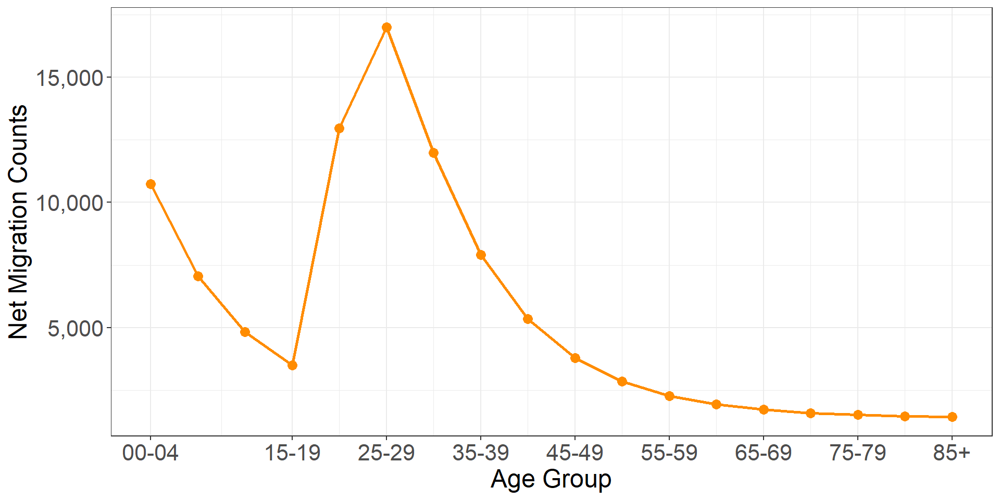
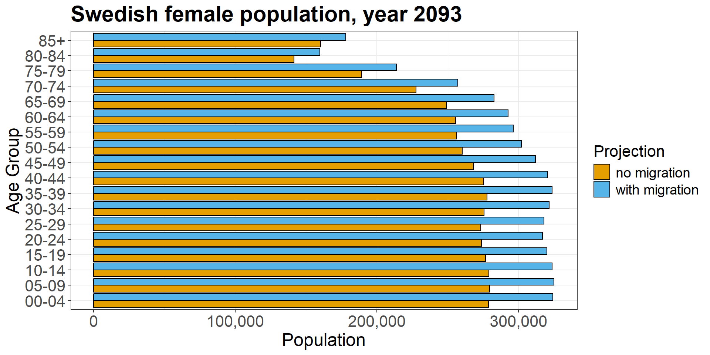
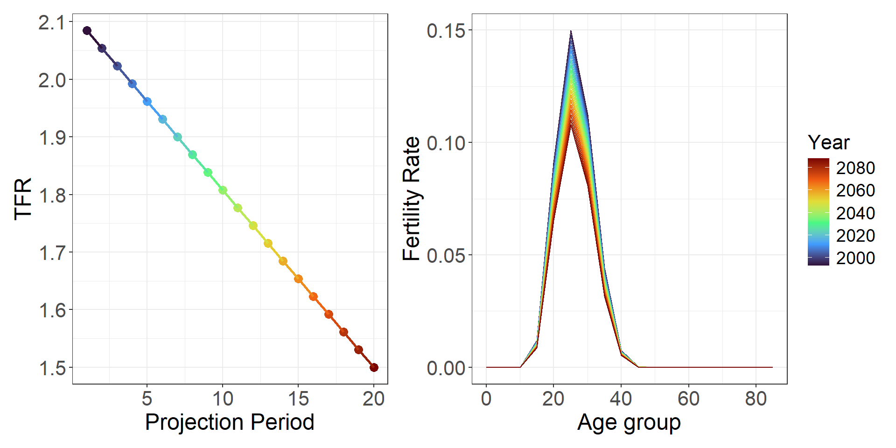
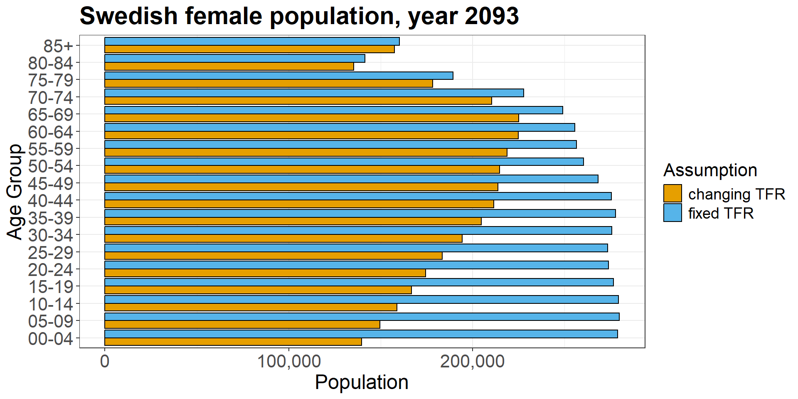

Population Projections & Demographic Forecasting
April 29, 2026
Course overview
Lecture 1: Population Projections & Cohort Component Method
Lecture 2: Matrix Projections I
Lecture 3: Matrix Projections II
- Lecture 4: Demographic Forecasting & Lee-Carter
Small recap
In Lecture 2, we have seen the advantages of using the matrix formulation of the cohort component method for population projections
- can significantly speed up your code and computations
- can incorporate female and male populations within the same setting
\(\Rightarrow\) what about migration and time-specific assumptions on future demographic components?
Projection of an open population
- Let \(M[0, T]\) be the net migrations between \(0\) and \(T\). Then \(N(T) = N(0) + B[0, T] - D[0, T] + M[0, T]\) (balancing equation of population growth)
- Dividing by number of person-years lived: \[\begin{align} \begin{split} \frac{N(T) - N(0)}{PY[0, T]} &= \frac{B[0, T]}{PY[0, T]} - \frac{D[0, T]}{PY[0, T]} + \frac{M[0, T]}{PY[0, T]} \\ r \qquad &= \qquad b \quad\;\; - \qquad d \quad\;\, + \qquad m \end{split} \end{align}\]
- crude growth rate \(r\) expressed in terms of the three demographic components, i.e. birth (\(b\)), death (\(d\)) and net migration (\(m\)) crude rates
- \(r\) is used, for example, in constant exponential growth model \(N(T) = N(0) e^{r T}\)
Requiem for the net migrant (Rogers 1990)
- the net migrant is “a nonexistent category of individuals”
- net migration rate is a flawed measure: it is the difference between a true rate (out-migration) and a prevalence (in-migration). Denominators are different!
- they obscure regularities in age profiles of migration
\(\Rightarrow\) Use net migration counts instead
CCM with an open population
- Formal difficulty of integrating migration is that migration continuously affects the population at risk of dying and giving birth
- Convenient approach: divide number of migrants into two discrete quantities, and assume that half move at the start of the interval, and half at the end of it
- Let \(I_x[t, t+5]\) be the net flow if immigrants (it can be negative if migration balance is negative). Then: \[ N_{x+5}(t+5) = \left(N_x(t) + \frac{I_x[t, t+5]}{2}\right) s_x + \frac{I_{x+5}[t, t+5]}{2} \]
- In matrix notation: \(\boldsymbol{N}(t+5) = \boldsymbol{L}[t,t+5] \left(\boldsymbol{N}(t) + \frac{1}{2} \boldsymbol{I}(t) \right) + \frac{1}{2} \boldsymbol{I}(t)\)
Derivation of net migration counts
- Can be computed as the residual part of the balancing equation of population growth - these tend to show erratic year-to-year fluctuations
- alternatively, we can use a parametric model, such as the Rogers and Castro (1981) model migration schedules
- only need the total number of net migrants, which is distributed over the age groups using parametric functions
Rogers and Castro (1981) migration schedule

Four components: (i) a negative exponential curve of the pre-labor force ages; (ii) a left-skewed unimodal curve of the labor force ages; (iii) an almost bell-shaped curve of the post-labor force ages; and (iv) a constant curve
Rogers and Castro (1981) migration schedule
- let’s focus on first two components of migration and the constant, i.e.
\[ m(x) = a_1 \exp \left( -\alpha_1 x \right) + a_2 \exp \left\{ -\alpha_2 \left( x- \mu_2 \right) - \exp \left[-\lambda_2 \left(x-\mu_2\right)\right] \right\} + c \]
the fundamental RC parameters are provided by the
rc_model_fundin themigestpackage (Abel 2021)obtain age-specific counts by multiplying total net migration by the RC schedule
RC migration schedule in R
### cleaning the workspace
rm(list=ls())
## loading packages
library(tidyverse)
library(migest)
## check the fundamental RC parameters
rc_model_fund
my.pars <- rc_model_fund %>%
select(value) %>% pull()
## function to construct RC schedule
mxRG <- function(x,pars){
t1 <- pars[1]*exp(-pars[2]*x)
t2 <- pars[3]*exp(-pars[4]*(x-pars[5])-exp(-pars[6]*(x-pars[5])))
mx <- t1+t2+pars[7]
mx <- mx/sum(mx)
return(mx)
}
## five-year age groups (works well also with one-year)
x <- seq(0,85,5)
mx <- mxRG(x=x,pars=my.pars)
plot(x, mx, type="o",pch=16)
## assume a total of 100000 net migration counts
I <- 1e5
Ix <- I*mx
sum(Ix)
plot(x, Ix, type="o",pch=16,
xlab = "Age group",ylab= "Net migrant counts",
main="RC migration schedule for 100,000 net migrants") RC migration schedule in R

Including net migration: Exercise
Exercise
Load yesterday’s data EDSD.lecture3.Rdata. Project the female population for 20 periods ahead assuming an overall amount of 25000 net migrants in each period. Compare your projections with and without the migration component.
Hint: adapt your population projection function by including the net migration counts (by age, derived from the RC schedule).
Reminder: \[ \boldsymbol{N}(t+5) = \boldsymbol{L}[t,t+5] \left(\boldsymbol{N}(t) + \frac{1}{2} \boldsymbol{I}(t) \right) + \frac{1}{2} \boldsymbol{I}(t) \]
One possible solution
## derive net female migrants by age (RC schedule)
I <- 2.5e4
Ix <- I*mx
## create a function for projecting female population
## in the long term WITH net migration
pop.proj.F.mig.fun <- function(age,agegroup,sFx,bFx,
NFx,Ix,
n=1){
## dimension of data
m <- length(age)
## create an empty Leslie matrix
L <- matrix(0,nrow = m,ncol = m)
## fill up L
L[1,] <- bFx
diag(L[-1,]) <- sFx
L[m,m] <- sFx[m-1]
## create a matrix of population vectors
N <- matrix(0,nrow = m,ncol = n + 1)
## fill first column with the starting population
N[,1] <- NFx
## for loop for the projection
i <- 1
for (i in 1:n){
N[,i+1] <- L%*%(N[,i]+Ix/2) + Ix/2
}
## create output of our function
out <- cbind(data.frame(age=age,agegroup=agegroup),N)
return(out)
}
## objects
age <- df.projection$Age
agegroup <- df.projection$AgeGroup
sFx <- df.projection$sFx
bFx <- df.projection$bFx
NFx <- df.projection$NFx
## change NAs to 0 for bFx
bFx[is.na(bFx)] <- 0
## drop last element of sFx
sFx <- sFx[!is.na(sFx)]
## actual projection
my.proj1.mig <- pop.proj.F.mig.fun(age=age,agegroup=agegroup,
sFx=sFx,bFx=bFx,NFx=NFx,Ix = Ix,
n=20)
## long data
dta.swe.l <- my.proj1 %>%
pivot_longer(-c(age,agegroup),names_to = "period",values_to = "population") %>%
mutate(period=as.numeric(period),
Year=1993 + (period-1)*5,
YearF=as.factor(Year),
type = "no migration")
dta.swe.l.mig <- my.proj1.mig %>%
pivot_longer(-c(age,agegroup),names_to = "period",values_to = "population") %>%
mutate(period=as.numeric(period),
Year=1993 + (period-1)*5,
YearF=as.factor(Year),
type = "with migration")
dta.swe.all <- dta.swe.l %>%
bind_rows(dta.swe.l.mig)
## plotting
ggplot(dta.swe.all,aes(x=agegroup,y=population,fill=type)) +
geom_bar(data = subset(dta.swe.all, period == 21),
stat = "identity",position = "dodge",color = "black") +
coord_flip() +
theme_bw() +
ggtitle(paste("Swedish female population, year",subset(dta.swe.all, period == 21)$Year)) +
scale_fill_manual(name = 'Projection', values=c("#E69F00", "#56B4E9"))One possible solution

CCM: Time-varying assumptions
- it is unlikely that demographic components will not change over time
- the CCM can accomodate time-varying assumptions on some (or all) demographic components
- this extension can be used to produce more “realistic” scenarios of population projections
- this can be achieved by including time-specific entries in the Leslie matrix
An Example: Fertility decline
Let us assume that the Total Fertility Rate (TFR), \(TFR = 5 \sum_{x} Fx\), declines from its current value in our data (= 2.085 ) to 1.5 at the end of the projection period

Time-varying assumptions: Exercise
Exercise
Project the female population for 20 periods ahead assuming the above pattern of TFR decline (from 2.085 to 1.5). Compare your results with the projection with unchanged fertility
Reminder: time-varying fertility rates enter the Leslie matrix via
\[ b^{F}_x(t) = \frac{1}{1 + SRB} \frac{L^{F}_0}{2 \ell_0} \big(F_{x}(t) + s^{F}_x \, F_{x+5}(t)\big) \]
One possible solution
## computing TFR
fx <- df.projection$Fx
tfr1 <- sum(5*fx)
m <- length(fx)
n <- 20
## adjusting TFR
TFR <- seq(tfr1,1.5,length=n)
plot(1:n,TFR)
## adjusting fertility rates
FX <- matrix(fx,m,n)
for (i in 1:n){
FX[,i] <- FX[,i]/tfr1 * TFR[i]
}
5*apply(FX,2,sum)
## useful objects
srb <- 1.05
fact.srb <- 1/(1+srb)
LF0 <- df.projection$LFx[1]
l0 <- 1e5
## define a matrix of time-varying BFX
BFX <- matrix(bFx,m,n)
for (i in 1:n){
fx <- FX[,i]
BFX[-m,i] <- fact.srb*LF0/(2*l0)*(fx[-m]+sFx*fx[-1])
}
## create a function for projecting female population
## in the long term WITH changing fertility
pop.proj.F.fert.fun <- function(age,agegroup,sFx,BFX,
NFx,
n=1){
## dimension of data
m <- length(age)
## create an empty Leslie matrix
L <- matrix(0,nrow = m,ncol = m)
## fill up L (not the first line)
diag(L[-1,]) <- sFx
L[m,m] <- sFx[m-1]
## create a matrix of population vectors
N <- matrix(0,nrow = m,ncol = n + 1)
## fill first column with the starting population
N[,1] <- NFx
## for loop for the projection
i <- 1
for (i in 1:n){
L[1,] <- BFX[,i]
N[,i+1] <- L%*%N[,i]
}
## create output of our function
out <- cbind(data.frame(age=age,agegroup=agegroup),N)
return(out)
}
## actual projection
my.proj1.TFR <- pop.proj.F.fert.fun(age=age,agegroup=agegroup,
sFx=sFx,BFX=BFX,NFx=NFx,n=n)
## long data
dta.swe.l <- my.proj1 %>%
pivot_longer(-c(age,agegroup),names_to = "period",values_to = "population") %>%
mutate(period=as.numeric(period),
Year=1993 + (period-1)*5,
YearF=as.factor(Year),
type = "fixed TFR")
dta.swe.l.tfr <- my.proj1.TFR %>%
pivot_longer(-c(age,agegroup),names_to = "period",values_to = "population") %>%
mutate(period=as.numeric(period),
Year=1993 + (period-1)*5,
YearF=as.factor(Year),
type = "changing TFR")
dta.swe.all <- dta.swe.l %>%
bind_rows(dta.swe.l.tfr)
## plotting
ggplot(dta.swe.all,aes(x=agegroup,y=population,fill=type)) +
geom_bar(data = subset(dta.swe.all, period == 21),
stat = "identity",position = "dodge",color = "black") +
coord_flip() +
theme_bw() +
ggtitle(paste("Swedish female population, year",subset(dta.swe.all, period == 21)$Year)) +
scale_fill_manual(name = 'Projection', values=c("#E69F00", "#56B4E9"))
## SHINY APP for dynamic visualization of your results
library(shiny)
ui <- fluidPage(
sliderInput(inputId = "year", label = "Year", step = 5,
value = min(dta.swe.l$Year), min = min(dta.swe.l$Year), max = max(dta.swe.l$Year)),
column(12, plotOutput("plot_pyr1"))
)
server <- function(input, output){
output$plot_pyr1 <- renderPlot({
## plotting pyramid
ggplot(dta.swe.all,aes(x=agegroup,y=population,fill=type)) +
geom_bar(data = subset(dta.swe.all, Year == input$year),
stat = "identity",position = "dodge",color = "black") +
coord_flip() +
theme_bw() +
ggtitle(paste("Swedish female population, year",subset(dta.swe.all, Year == input$year)$Year)) +
scale_fill_manual(name = "Projection", values=c("#E69F00", "#56B4E9")) +
scale_y_continuous(limits = c(0, 350000), breaks = seq(0, 350000, 100000))
})
}
shinyApp(ui = ui, server = server)One possible solution

One possible solution

Results in a shiny app
Stable Populations
(see other slides)
Some final remarks
- we have seen several extensions of the cohort component model in matrix formulation
- age interval can be of any length (1y, 5y, 10y), formulas are unchanged (but the projection period is always equal to your age interval)
- results shown from the eigendecomposition of the Leslie matrix hold only:
- in the long run, and
- for a stable population (closed to migration, with constant fertility and mortality rates over time)
Day 3 assignment
Assignment
Following up on Exercise #4, include migration in your projection 20 period ahead. You can either use observed net migration counts (you can estimate them from the balancing equation of population growth) or the Rogers-Castro migration schedule (try to find reasonable data on total net migration counts).
Project your chosen population by sex for \(n=20\) periods ahead, making time-specific assumptions about one or more demographic components.
Derive the long-term growth rate and population distribution by eigendecomposing the Leslie matrix of your chosen population (Exercise 4), and compare your results with those that you obtain from a long projection (\(n=50\)) of your population. As a second step, modify your starting population by randomly re-assigning elements on \(\boldsymbol{N}(t)\) to different age groups, and project the new population in the long term. Compute the long-term growth rate and distribution of this second population, and compare it to the first
References
Abel, G.J. (2021). migest: Methods for the Indirect Estimation of Bilateral Migration. R package version 2.0.1. https://CRAN.R-project.org/package=migest
Rogers, A. (1990). Requiem for the net migrant. Geographical Analysis, 22(4), 283-300
Rogers, A. and Castro, L.J. (1981). Model Migration Schedules. IIASA Research Report 81, RR-81-30

European Doctoral School of Demography 2025/2026 \(\cdot\) INED, Aubervilliers